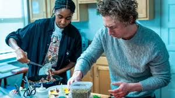

La segunda temporada de The Bear sigue a Carmy, Sydney y el equipo transformando
el caótico "The Beef" en un restaurante de alta cocina, "The Bear", en solo tres meses.
Enfrentan estrés extremo, problemas financieros y reformas, mientras cada personaje
evoluciona profesionalmente y busca su propósito, culminando en una noche de inauguración exitosa pero emocionalmente tensa.

El equipo cierra el local de sándwiches y se enfoca en crear un menú nuevo y profesional.
con Sydney asumiendo mayor liderazgo y Sugar como administradora.
